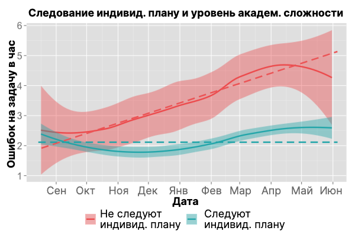
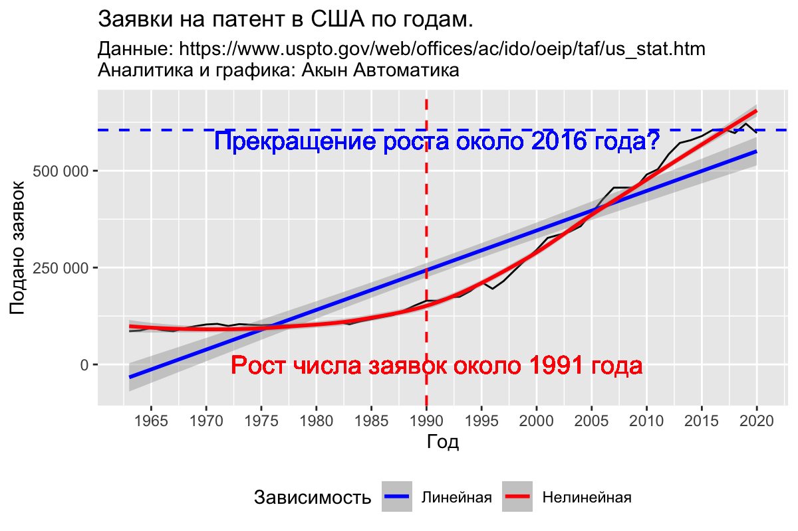

Animus ante omnes. Cordis ante animus.
Специалисты Акын Автоматика имеют совокупный опыт 35 человеко-лет в области статистического анализа, обработки и инженеринга больших массивов данных, машинного обучения и построения моделей, макетинговой аналитики, а также финансовой и контрактной аналитики.
Приведём несколько примеров опубликованных аналитических продуктов. Свяжитесь с нами через форму обратной связи если хотите сотрудничать в этой области.
Команда Акын Автоматика имеет большой опыт в аналитике и моделировании данных из системы образования и временных рядов. Приведённый ниже анализ был произведён на данных 11 000 учащихся из 50 школ и 280 разных классов. Данные были собраны во время уроков алгебры в 6-8 классах во время сравнительного эксперимента по внедрению дифференцированного обучения с поддержкой автоматизированного построения индивидуальных планов обучения.
Одним из критериев оценки была т.н. “дважды нормированная ошибка” — количество ошибок на задачу в час. Графики апроксимации среднего уровня уровня такой ошибки в классе приведены ниже для двух групп классов — тех кто следовал рекомендациям индивидульного планирования обучения (зелёный цвет), и тех кто не следовал (красный цвет).

На графике видно, что для “зелёной” группы (те кто следовал индивидуальным планам) уровень дважды нормированный ошибки ниже по среднему начению и по доверительному интервалу. Этот уровень приблизительно постоянен на протяжении учебного года. Тогда как для “красной” группы (те кто не следовал индивидуальным планам) этот уровень выше и по среднему значению и по вариативности, а также растет по ходу учебного года. В академическом смысле, дважды нормированный уровень ошибки можно интерпретировать как уровень учебной нагрузки.
Стоит отметить, что внедрение дифференцированного обучения требует от школ и учителей дополнительных ресурсов и усилий. Учеников следует группировать по текущему уровню знаний, с каждой группой проводить сфокусированные мини-уроки. Учителю нужно уметь разделять своё внимание и контролировать несколько учебных под-процессов. Ситуация похожа на ту, когда, в сельских школах XIX в. в классной комнате, зачастую, сидели ученики разных классов и разных уровней подготовки и учитель должен был управлять процессом обучения каждого из них. Без дифференцированного подхода к обучению может возникать ситуация, когда “одни ученики не понимают, а другим скучно”.
Акын Автоматика предоставляет высококачественные услуги отекстовки аудио с акцентом на скорость и точность, минимизируя сложность процесса. Доверьте свои проекты профессионалам и ощутите идеальное сочетание качества и оперативности.

Акын Автоматика предоставляет высококачественные услуги отекстовки аудио с акцентом на скорость и точность, минимизируя сложность процесса. Доверьте свои проекты профессионалам и ощутите идеальное сочетание качества и оперативности.
Септуагинта в пер. Юнгерова и Синодальный текст